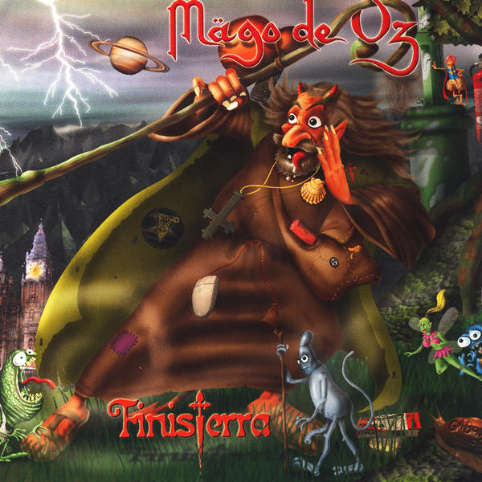

Finisterra
Finisterra es el quinto album de la banda Mago de Oz,
siendo este su primer disco doble. Contine varias de las
canciones mas populares del grupo
- Prólogo 2:00
- Satania 8:14
- La cruz de Santiago 5:19
- La danza del fuego 5:13
- Hasta que el cuerpo aguante 4:32
- El señor de los gramillos 4:59
- Duerme 4:29
- Maite Zaitut 3:20
- Es hora de marchar 5:03
- Fiesta pagana 4:55
- El que quiera entender que entienda 7:27
- Los renglones torcidos de Dios 6:32
- Kelpie 4:51
- Tres tristes tigres 2:44
- Acosta Da´morte 3:35
- La santa compaña 5:34
- Conxuro 3:46
- Astroth 6:31
- Finisterra 15:17
